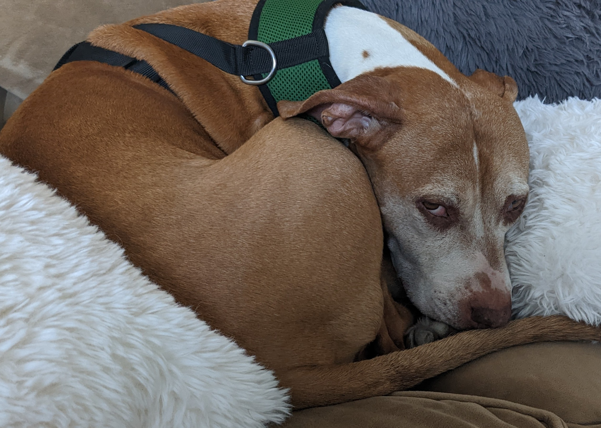

When it comes to tech skills, I have a few:
non tech skills:
I have a lot of interests. I have a homelab that I'll describe to fill up space here. I have a proxmox HA cluster, 4 nodes. There is failover setup in case one fails. I have a variety of VMs, some running alpine linux, some running ubuntu (I'm trying to phase these out, I'm not a fan of ubuntu), some running rocky linux. I have one VM dedicated to backing up configs and other important files running freebsd. This VM runs a script daily to using rsync to store files on a linode instance. I have 2 docker dedicated VMs. One is for VPN access, mc servers, and other testing. The other runs my media center. This includes jellyfin to serve video files, radarr to fetch movies, sonarr to fetch tv shows, all synced with transmission which downloads the files. The containers go through a mullvad VPN container to anonomyze web traffic. I host several sites for some local companies. I also host a few blogs for family and friends. I have another VM which runs openBSD and hosts my personal blog. Lastly, I have a TrueNAS server which hosts most of the media, as well as some backups. It has about 14TB of storage available.
Outside of technology, I have an interest in history and politics. I have an extensive collection of books, mostly nonfiction, realted to those topics.
My dog takes up a lot of my time. Here is a picture of her. She doesn't like being woken up.
I wanted to do this bootcamp to properly learn how to program. I took a few CS classes in college, but I was never able to learn much. Right now I'm an devops engineer, I know enough python to get by, but I'd like to learn more to be able to not rely on my coworkers for any scripting and other things we do. I'd like to keep learning software development, and maybe eventually transition to that position, whether in my current company or somewhere else. Although I enjoy devops, it's stressful and I think it's affecting my mental health in a negative way.